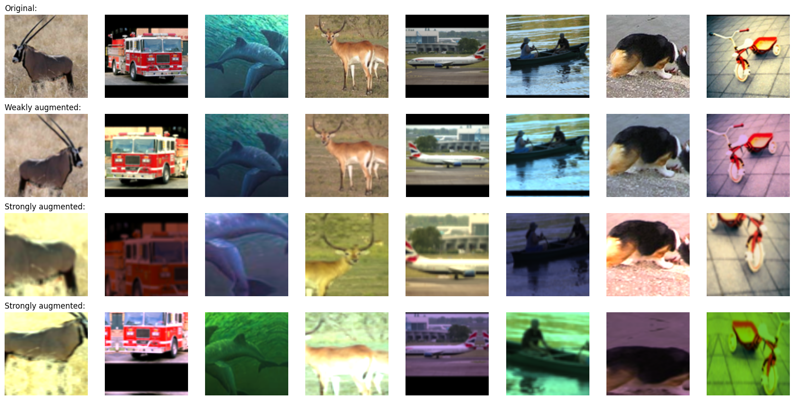
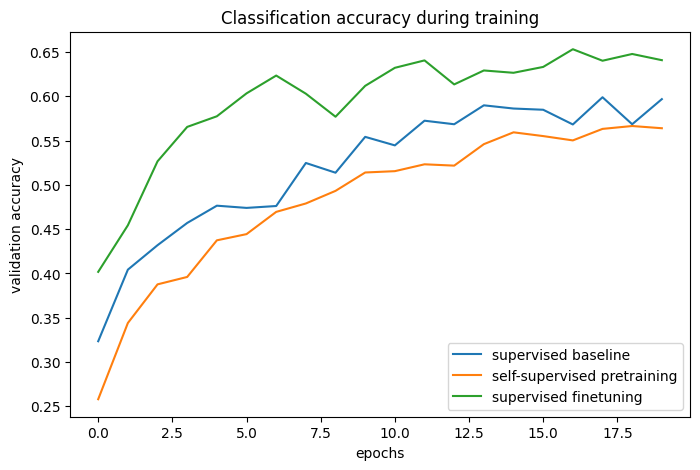
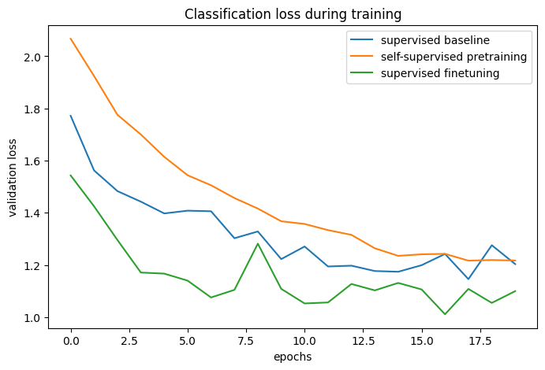

Semi-supervised image classification using contrastive pretraining with SimCLR
Author: András Béres
Date created: 2021/04/24
Last modified: 2024/03/04
Description: Contrastive pretraining with SimCLR for semi-supervised image classification on the STL-10 dataset.

Introduction
Semi-supervised learning
Semi-supervised learning is a machine learning paradigm that deals with partially labeled datasets. When applying deep learning in the real world, one usually has to gather a large dataset to make it work well. However, while the cost of labeling scales linearly with the dataset size (labeling each example takes a constant time), model performance only scales sublinearly with it. This means that labeling more and more samples becomes less and less cost-efficient, while gathering unlabeled data is generally cheap, as it is usually readily available in large quantities.
Semi-supervised learning offers to solve this problem by only requiring a partially labeled dataset, and by being label-efficient by utilizing the unlabeled examples for learning as well.
In this example, we will pretrain an encoder with contrastive learning on the STL-10 semi-supervised dataset using no labels at all, and then fine-tune it using only its labeled subset.
Contrastive learning
On the highest level, the main idea behind contrastive learning is to learn representations that are invariant to image augmentations in a self-supervised manner. One problem with this objective is that it has a trivial degenerate solution: the case where the representations are constant, and do not depend at all on the input images.
Contrastive learning avoids this trap by modifying the objective in the following way: it pulls representations of augmented versions/views of the same image closer to each other (contracting positives), while simultaneously pushing different images away from each other (contrasting negatives) in representation space.
One such contrastive approach is SimCLR, which essentially identifies the core components needed to optimize this objective, and can achieve high performance by scaling this simple approach.
Another approach is SimSiam (Keras example), whose main difference from SimCLR is that the former does not use any negatives in its loss. Therefore, it does not explicitly prevent the trivial solution, and, instead, avoids it implicitly by architecture design (asymmetric encoding paths using a predictor network and batch normalization (BatchNorm) are applied in the final layers).
For further reading about SimCLR, check out the official Google AI blog post, and for an overview of self-supervised learning across both vision and language check out this blog post.
Setup
import os
os.environ["KERAS_BACKEND"] = "tensorflow"
# Make sure we are able to handle large datasets
import resource
low, high = resource.getrlimit(resource.RLIMIT_NOFILE)
resource.setrlimit(resource.RLIMIT_NOFILE, (high, high))
import math
import matplotlib.pyplot as plt
import tensorflow as tf
import tensorflow_datasets as tfds
import keras
from keras import ops
from keras import layers
Hyperparameter setup
# Dataset hyperparameters
unlabeled_dataset_size = 100000
labeled_dataset_size = 5000
image_channels = 3
# Algorithm hyperparameters
num_epochs = 20
batch_size = 525 # Corresponds to 200 steps per epoch
width = 128
temperature = 0.1
# Stronger augmentations for contrastive, weaker ones for supervised training
contrastive_augmentation = {"min_area": 0.25, "brightness": 0.6, "jitter": 0.2}
classification_augmentation = {
"min_area": 0.75,
"brightness": 0.3,
"jitter": 0.1,
}
Dataset
During training we will simultaneously load a large batch of unlabeled images along with a smaller batch of labeled images.
def prepare_dataset():
# Labeled and unlabeled samples are loaded synchronously
# with batch sizes selected accordingly
steps_per_epoch = (unlabeled_dataset_size + labeled_dataset_size) // batch_size
unlabeled_batch_size = unlabeled_dataset_size // steps_per_epoch
labeled_batch_size = labeled_dataset_size // steps_per_epoch
print(
f"batch size is {unlabeled_batch_size} (unlabeled) + {labeled_batch_size} (labeled)"
)
# Turning off shuffle to lower resource usage
unlabeled_train_dataset = (
tfds.load("stl10", split="unlabelled", as_supervised=True, shuffle_files=False)
.shuffle(buffer_size=10 * unlabeled_batch_size)
.batch(unlabeled_batch_size)
)
labeled_train_dataset = (
tfds.load("stl10", split="train", as_supervised=True, shuffle_files=False)
.shuffle(buffer_size=10 * labeled_batch_size)
.batch(labeled_batch_size)
)
test_dataset = (
tfds.load("stl10", split="test", as_supervised=True)
.batch(batch_size)
.prefetch(buffer_size=tf.data.AUTOTUNE)
)
# Labeled and unlabeled datasets are zipped together
train_dataset = tf.data.Dataset.zip(
(unlabeled_train_dataset, labeled_train_dataset)
).prefetch(buffer_size=tf.data.AUTOTUNE)
return train_dataset, labeled_train_dataset, test_dataset
# Load STL10 dataset
train_dataset, labeled_train_dataset, test_dataset = prepare_dataset()
batch size is 500 (unlabeled) + 25 (labeled)
Image augmentations
The two most important image augmentations for contrastive learning are the following:
- Cropping: forces the model to encode different parts of the same image similarly, we implement it with the RandomTranslation and RandomZoom layers
- Color jitter: prevents a trivial color histogram-based solution to the task by distorting color histograms. A principled way to implement that is by affine transformations in color space.
In this example we use random horizontal flips as well. Stronger augmentations are applied for contrastive learning, along with weaker ones for supervised classification to avoid overfitting on the few labeled examples.
We implement random color jitter as a custom preprocessing layer. Using preprocessing layers for data augmentation has the following two advantages:
- The data augmentation will run on GPU in batches, so the training will not be bottlenecked by the data pipeline in environments with constrained CPU resources (such as a Colab Notebook, or a personal machine)
- Deployment is easier as the data preprocessing pipeline is encapsulated in the model, and does not have to be reimplemented when deploying it
# Distorts the color distibutions of images
class RandomColorAffine(layers.Layer):
def __init__(self, brightness=0, jitter=0, **kwargs):
super().__init__(**kwargs)
self.seed_generator = keras.random.SeedGenerator(1337)
self.brightness = brightness
self.jitter = jitter
def get_config(self):
config = super().get_config()
config.update({"brightness": self.brightness, "jitter": self.jitter})
return config
def call(self, images, training=True):
if training:
batch_size = ops.shape(images)[0]
# Same for all colors
brightness_scales = 1 + keras.random.uniform(
(batch_size, 1, 1, 1),
minval=-self.brightness,
maxval=self.brightness,
seed=self.seed_generator,
)
# Different for all colors
jitter_matrices = keras.random.uniform(
(batch_size, 1, 3, 3),
minval=-self.jitter,
maxval=self.jitter,
seed=self.seed_generator,
)
color_transforms = (
ops.tile(ops.expand_dims(ops.eye(3), axis=0), (batch_size, 1, 1, 1))
* brightness_scales
+ jitter_matrices
)
images = ops.clip(ops.matmul(images, color_transforms), 0, 1)
return images
# Image augmentation module
def get_augmenter(min_area, brightness, jitter):
zoom_factor = 1.0 - math.sqrt(min_area)
return keras.Sequential(
[
layers.Rescaling(1 / 255),
layers.RandomFlip("horizontal"),
layers.RandomTranslation(zoom_factor / 2, zoom_factor / 2),
layers.RandomZoom((-zoom_factor, 0.0), (-zoom_factor, 0.0)),
RandomColorAffine(brightness, jitter),
]
)
def visualize_augmentations(num_images):
# Sample a batch from a dataset
images = next(iter(train_dataset))[0][0][:num_images]
# Apply augmentations
augmented_images = zip(
images,
get_augmenter(**classification_augmentation)(images),
get_augmenter(**contrastive_augmentation)(images),
get_augmenter(**contrastive_augmentation)(images),
)
row_titles = [
"Original:",
"Weakly augmented:",
"Strongly augmented:",
"Strongly augmented:",
]
plt.figure(figsize=(num_images * 2.2, 4 * 2.2), dpi=100)
for column, image_row in enumerate(augmented_images):
for row, image in enumerate(image_row):
plt.subplot(4, num_images, row * num_images + column + 1)
plt.imshow(image)
if column == 0:
plt.title(row_titles[row], loc="left")
plt.axis("off")
plt.tight_layout()
visualize_augmentations(num_images=8)

Encoder architecture
# Define the encoder architecture
def get_encoder():
return keras.Sequential(
[
layers.Conv2D(width, kernel_size=3, strides=2, activation="relu"),
layers.Conv2D(width, kernel_size=3, strides=2, activation="relu"),
layers.Conv2D(width, kernel_size=3, strides=2, activation="relu"),
layers.Conv2D(width, kernel_size=3, strides=2, activation="relu"),
layers.Flatten(),
layers.Dense(width, activation="relu"),
],
name="encoder",
)
Supervised baseline model
A baseline supervised model is trained using random initialization.
# Baseline supervised training with random initialization
baseline_model = keras.Sequential(
[
get_augmenter(**classification_augmentation),
get_encoder(),
layers.Dense(10),
],
name="baseline_model",
)
baseline_model.compile(
optimizer=keras.optimizers.Adam(),
loss=keras.losses.SparseCategoricalCrossentropy(from_logits=True),
metrics=[keras.metrics.SparseCategoricalAccuracy(name="acc")],
)
baseline_history = baseline_model.fit(
labeled_train_dataset, epochs=num_epochs, validation_data=test_dataset
)
print(
"Maximal validation accuracy: {:.2f}%".format(
max(baseline_history.history["val_acc"]) * 100
)
)
Epoch 1/20
200/200 ━━━━━━━━━━━━━━━━━━━━ 9s 25ms/step - acc: 0.2031 - loss: 2.1576 - val_acc: 0.3234 - val_loss: 1.7719
Epoch 2/20
200/200 ━━━━━━━━━━━━━━━━━━━━ 4s 17ms/step - acc: 0.3476 - loss: 1.7792 - val_acc: 0.4042 - val_loss: 1.5626
Epoch 3/20
200/200 ━━━━━━━━━━━━━━━━━━━━ 4s 17ms/step - acc: 0.4060 - loss: 1.6054 - val_acc: 0.4319 - val_loss: 1.4832
Epoch 4/20
200/200 ━━━━━━━━━━━━━━━━━━━━ 4s 18ms/step - acc: 0.4347 - loss: 1.5052 - val_acc: 0.4570 - val_loss: 1.4428
Epoch 5/20
200/200 ━━━━━━━━━━━━━━━━━━━━ 4s 18ms/step - acc: 0.4600 - loss: 1.4546 - val_acc: 0.4765 - val_loss: 1.3977
Epoch 6/20
200/200 ━━━━━━━━━━━━━━━━━━━━ 4s 17ms/step - acc: 0.4754 - loss: 1.4015 - val_acc: 0.4740 - val_loss: 1.4082
Epoch 7/20
200/200 ━━━━━━━━━━━━━━━━━━━━ 4s 17ms/step - acc: 0.4901 - loss: 1.3589 - val_acc: 0.4761 - val_loss: 1.4061
Epoch 8/20
200/200 ━━━━━━━━━━━━━━━━━━━━ 4s 17ms/step - acc: 0.5110 - loss: 1.2793 - val_acc: 0.5247 - val_loss: 1.3026
Epoch 9/20
200/200 ━━━━━━━━━━━━━━━━━━━━ 4s 17ms/step - acc: 0.5298 - loss: 1.2765 - val_acc: 0.5138 - val_loss: 1.3286
Epoch 10/20
200/200 ━━━━━━━━━━━━━━━━━━━━ 4s 17ms/step - acc: 0.5514 - loss: 1.2078 - val_acc: 0.5543 - val_loss: 1.2227
Epoch 11/20
200/200 ━━━━━━━━━━━━━━━━━━━━ 4s 17ms/step - acc: 0.5520 - loss: 1.1851 - val_acc: 0.5446 - val_loss: 1.2709
Epoch 12/20
200/200 ━━━━━━━━━━━━━━━━━━━━ 4s 17ms/step - acc: 0.5851 - loss: 1.1368 - val_acc: 0.5725 - val_loss: 1.1944
Epoch 13/20
200/200 ━━━━━━━━━━━━━━━━━━━━ 4s 18ms/step - acc: 0.5738 - loss: 1.1411 - val_acc: 0.5685 - val_loss: 1.1974
Epoch 14/20
200/200 ━━━━━━━━━━━━━━━━━━━━ 4s 21ms/step - acc: 0.6078 - loss: 1.0308 - val_acc: 0.5899 - val_loss: 1.1769
Epoch 15/20
200/200 ━━━━━━━━━━━━━━━━━━━━ 4s 18ms/step - acc: 0.6284 - loss: 1.0386 - val_acc: 0.5863 - val_loss: 1.1742
Epoch 16/20
200/200 ━━━━━━━━━━━━━━━━━━━━ 4s 18ms/step - acc: 0.6450 - loss: 0.9773 - val_acc: 0.5849 - val_loss: 1.1993
Epoch 17/20
200/200 ━━━━━━━━━━━━━━━━━━━━ 4s 17ms/step - acc: 0.6547 - loss: 0.9555 - val_acc: 0.5683 - val_loss: 1.2424
Epoch 18/20
200/200 ━━━━━━━━━━━━━━━━━━━━ 4s 17ms/step - acc: 0.6593 - loss: 0.9084 - val_acc: 0.5990 - val_loss: 1.1458
Epoch 19/20
200/200 ━━━━━━━━━━━━━━━━━━━━ 4s 17ms/step - acc: 0.6672 - loss: 0.9267 - val_acc: 0.5685 - val_loss: 1.2758
Epoch 20/20
200/200 ━━━━━━━━━━━━━━━━━━━━ 4s 17ms/step - acc: 0.6824 - loss: 0.8863 - val_acc: 0.5969 - val_loss: 1.2035
Maximal validation accuracy: 59.90%
Self-supervised model for contrastive pretraining
We pretrain an encoder on unlabeled images with a contrastive loss. A nonlinear projection head is attached to the top of the encoder, as it improves the quality of representations of the encoder.
We use the InfoNCE/NT-Xent/N-pairs loss, which can be interpreted in the following way:
- We treat each image in the batch as if it had its own class.
- Then, we have two examples (a pair of augmented views) for each "class".
- Each view's representation is compared to every possible pair's one (for both augmented versions).
- We use the temperature-scaled cosine similarity of compared representations as logits.
- Finally, we use categorical cross-entropy as the "classification" loss
The following two metrics are used for monitoring the pretraining performance:
- Contrastive accuracy (SimCLR Table 5): Self-supervised metric, the ratio of cases in which the representation of an image is more similar to its differently augmented version's one, than to the representation of any other image in the current batch. Self-supervised metrics can be used for hyperparameter tuning even in the case when there are no labeled examples.
- Linear probing accuracy: Linear probing is a popular metric to evaluate self-supervised classifiers. It is computed as the accuracy of a logistic regression classifier trained on top of the encoder's features. In our case, this is done by training a single dense layer on top of the frozen encoder. Note that contrary to traditional approach where the classifier is trained after the pretraining phase, in this example we train it during pretraining. This might slightly decrease its accuracy, but that way we can monitor its value during training, which helps with experimentation and debugging.
Another widely used supervised metric is the KNN accuracy, which is the accuracy of a KNN classifier trained on top of the encoder's features, which is not implemented in this example.
# Define the contrastive model with model-subclassing
class ContrastiveModel(keras.Model):
def __init__(self):
super().__init__()
self.temperature = temperature
self.contrastive_augmenter = get_augmenter(**contrastive_augmentation)
self.classification_augmenter = get_augmenter(**classification_augmentation)
self.encoder = get_encoder()
# Non-linear MLP as projection head
self.projection_head = keras.Sequential(
[
keras.Input(shape=(width,)),
layers.Dense(width, activation="relu"),
layers.Dense(width),
],
name="projection_head",
)
# Single dense layer for linear probing
self.linear_probe = keras.Sequential(
[layers.Input(shape=(width,)), layers.Dense(10)],
name="linear_probe",
)
self.encoder.summary()
self.projection_head.summary()
self.linear_probe.summary()
def compile(self, contrastive_optimizer, probe_optimizer, **kwargs):
super().compile(**kwargs)
self.contrastive_optimizer = contrastive_optimizer
self.probe_optimizer = probe_optimizer
# self.contrastive_loss will be defined as a method
self.probe_loss = keras.losses.SparseCategoricalCrossentropy(from_logits=True)
self.contrastive_loss_tracker = keras.metrics.Mean(name="c_loss")
self.contrastive_accuracy = keras.metrics.SparseCategoricalAccuracy(
name="c_acc"
)
self.probe_loss_tracker = keras.metrics.Mean(name="p_loss")
self.probe_accuracy = keras.metrics.SparseCategoricalAccuracy(name="p_acc")
@property
def metrics(self):
return [
self.contrastive_loss_tracker,
self.contrastive_accuracy,
self.probe_loss_tracker,
self.probe_accuracy,
]
def contrastive_loss(self, projections_1, projections_2):
# InfoNCE loss (information noise-contrastive estimation)
# NT-Xent loss (normalized temperature-scaled cross entropy)
# Cosine similarity: the dot product of the l2-normalized feature vectors
projections_1 = ops.normalize(projections_1, axis=1)
projections_2 = ops.normalize(projections_2, axis=1)
similarities = (
ops.matmul(projections_1, ops.transpose(projections_2)) / self.temperature
)
# The similarity between the representations of two augmented views of the
# same image should be higher than their similarity with other views
batch_size = ops.shape(projections_1)[0]
contrastive_labels = ops.arange(batch_size)
self.contrastive_accuracy.update_state(contrastive_labels, similarities)
self.contrastive_accuracy.update_state(
contrastive_labels, ops.transpose(similarities)
)
# The temperature-scaled similarities are used as logits for cross-entropy
# a symmetrized version of the loss is used here
loss_1_2 = keras.losses.sparse_categorical_crossentropy(
contrastive_labels, similarities, from_logits=True
)
loss_2_1 = keras.losses.sparse_categorical_crossentropy(
contrastive_labels, ops.transpose(similarities), from_logits=True
)
return (loss_1_2 + loss_2_1) / 2
def train_step(self, data):
(unlabeled_images, _), (labeled_images, labels) = data
# Both labeled and unlabeled images are used, without labels
images = ops.concatenate((unlabeled_images, labeled_images), axis=0)
# Each image is augmented twice, differently
augmented_images_1 = self.contrastive_augmenter(images, training=True)
augmented_images_2 = self.contrastive_augmenter(images, training=True)
with tf.GradientTape() as tape:
features_1 = self.encoder(augmented_images_1, training=True)
features_2 = self.encoder(augmented_images_2, training=True)
# The representations are passed through a projection mlp
projections_1 = self.projection_head(features_1, training=True)
projections_2 = self.projection_head(features_2, training=True)
contrastive_loss = self.contrastive_loss(projections_1, projections_2)
gradients = tape.gradient(
contrastive_loss,
self.encoder.trainable_weights + self.projection_head.trainable_weights,
)
self.contrastive_optimizer.apply_gradients(
zip(
gradients,
self.encoder.trainable_weights + self.projection_head.trainable_weights,
)
)
self.contrastive_loss_tracker.update_state(contrastive_loss)
# Labels are only used in evalutation for an on-the-fly logistic regression
preprocessed_images = self.classification_augmenter(
labeled_images, training=True
)
with tf.GradientTape() as tape:
# the encoder is used in inference mode here to avoid regularization
# and updating the batch normalization paramers if they are used
features = self.encoder(preprocessed_images, training=False)
class_logits = self.linear_probe(features, training=True)
probe_loss = self.probe_loss(labels, class_logits)
gradients = tape.gradient(probe_loss, self.linear_probe.trainable_weights)
self.probe_optimizer.apply_gradients(
zip(gradients, self.linear_probe.trainable_weights)
)
self.probe_loss_tracker.update_state(probe_loss)
self.probe_accuracy.update_state(labels, class_logits)
return {m.name: m.result() for m in self.metrics}
def test_step(self, data):
labeled_images, labels = data
# For testing the components are used with a training=False flag
preprocessed_images = self.classification_augmenter(
labeled_images, training=False
)
features = self.encoder(preprocessed_images, training=False)
class_logits = self.linear_probe(features, training=False)
probe_loss = self.probe_loss(labels, class_logits)
self.probe_loss_tracker.update_state(probe_loss)
self.probe_accuracy.update_state(labels, class_logits)
# Only the probe metrics are logged at test time
return {m.name: m.result() for m in self.metrics[2:]}
# Contrastive pretraining
pretraining_model = ContrastiveModel()
pretraining_model.compile(
contrastive_optimizer=keras.optimizers.Adam(),
probe_optimizer=keras.optimizers.Adam(),
)
pretraining_history = pretraining_model.fit(
train_dataset, epochs=num_epochs, validation_data=test_dataset
)
print(
"Maximal validation accuracy: {:.2f}%".format(
max(pretraining_history.history["val_p_acc"]) * 100
)
)
Model: "encoder"
┏━━━━━━━━━━━━━━━━━━━━━━━━━━━━━━━━━┳━━━━━━━━━━━━━━━━━━━━━━━━━━━┳━━━━━━━━━━━━┓ ┃ Layer (type) ┃ Output Shape ┃ Param # ┃ ┡━━━━━━━━━━━━━━━━━━━━━━━━━━━━━━━━━╇━━━━━━━━━━━━━━━━━━━━━━━━━━━╇━━━━━━━━━━━━┩ │ conv2d_4 (Conv2D) │ ? │ 0 │ │ │ │ (unbuilt) │ ├─────────────────────────────────┼───────────────────────────┼────────────┤ │ conv2d_5 (Conv2D) │ ? │ 0 │ │ │ │ (unbuilt) │ ├─────────────────────────────────┼───────────────────────────┼────────────┤ │ conv2d_6 (Conv2D) │ ? │ 0 │ │ │ │ (unbuilt) │ ├─────────────────────────────────┼───────────────────────────┼────────────┤ │ conv2d_7 (Conv2D) │ ? │ 0 │ │ │ │ (unbuilt) │ ├─────────────────────────────────┼───────────────────────────┼────────────┤ │ flatten_1 (Flatten) │ ? │ 0 │ │ │ │ (unbuilt) │ ├─────────────────────────────────┼───────────────────────────┼────────────┤ │ dense_2 (Dense) │ ? │ 0 │ │ │ │ (unbuilt) │ └─────────────────────────────────┴───────────────────────────┴────────────┘
Total params: 0 (0.00 B)
Trainable params: 0 (0.00 B)
Non-trainable params: 0 (0.00 B)
Model: "projection_head"
┏━━━━━━━━━━━━━━━━━━━━━━━━━━━━━━━━━┳━━━━━━━━━━━━━━━━━━━━━━━━━━━┳━━━━━━━━━━━━┓ ┃ Layer (type) ┃ Output Shape ┃ Param # ┃ ┡━━━━━━━━━━━━━━━━━━━━━━━━━━━━━━━━━╇━━━━━━━━━━━━━━━━━━━━━━━━━━━╇━━━━━━━━━━━━┩ │ dense_3 (Dense) │ (None, 128) │ 16,512 │ ├─────────────────────────────────┼───────────────────────────┼────────────┤ │ dense_4 (Dense) │ (None, 128) │ 16,512 │ └─────────────────────────────────┴───────────────────────────┴────────────┘
Total params: 33,024 (129.00 KB)
Trainable params: 33,024 (129.00 KB)
Non-trainable params: 0 (0.00 B)
Model: "linear_probe"
┏━━━━━━━━━━━━━━━━━━━━━━━━━━━━━━━━━┳━━━━━━━━━━━━━━━━━━━━━━━━━━━┳━━━━━━━━━━━━┓ ┃ Layer (type) ┃ Output Shape ┃ Param # ┃ ┡━━━━━━━━━━━━━━━━━━━━━━━━━━━━━━━━━╇━━━━━━━━━━━━━━━━━━━━━━━━━━━╇━━━━━━━━━━━━┩ │ dense_5 (Dense) │ (None, 10) │ 1,290 │ └─────────────────────────────────┴───────────────────────────┴────────────┘
Total params: 1,290 (5.04 KB)
Trainable params: 1,290 (5.04 KB)
Non-trainable params: 0 (0.00 B)
Epoch 1/20
200/200 ━━━━━━━━━━━━━━━━━━━━ 34s 134ms/step - c_acc: 0.0880 - c_loss: 5.2606 - p_acc: 0.1326 - p_loss: 2.2726 - val_c_acc: 0.0000e+00 - val_c_loss: 0.0000e+00 - val_p_acc: 0.2579 - val_p_loss: 2.0671
Epoch 2/20
200/200 ━━━━━━━━━━━━━━━━━━━━ 29s 139ms/step - c_acc: 0.2808 - c_loss: 3.6233 - p_acc: 0.2956 - p_loss: 2.0228 - val_c_acc: 0.0000e+00 - val_c_loss: 0.0000e+00 - val_p_acc: 0.3440 - val_p_loss: 1.9242
Epoch 3/20
200/200 ━━━━━━━━━━━━━━━━━━━━ 28s 136ms/step - c_acc: 0.4097 - c_loss: 2.9369 - p_acc: 0.3671 - p_loss: 1.8674 - val_c_acc: 0.0000e+00 - val_c_loss: 0.0000e+00 - val_p_acc: 0.3876 - val_p_loss: 1.7757
Epoch 4/20
200/200 ━━━━━━━━━━━━━━━━━━━━ 30s 142ms/step - c_acc: 0.4893 - c_loss: 2.5707 - p_acc: 0.3957 - p_loss: 1.7490 - val_c_acc: 0.0000e+00 - val_c_loss: 0.0000e+00 - val_p_acc: 0.3960 - val_p_loss: 1.7002
Epoch 5/20
200/200 ━━━━━━━━━━━━━━━━━━━━ 28s 136ms/step - c_acc: 0.5458 - c_loss: 2.3342 - p_acc: 0.4274 - p_loss: 1.6608 - val_c_acc: 0.0000e+00 - val_c_loss: 0.0000e+00 - val_p_acc: 0.4374 - val_p_loss: 1.6145
Epoch 6/20
200/200 ━━━━━━━━━━━━━━━━━━━━ 29s 140ms/step - c_acc: 0.5949 - c_loss: 2.1179 - p_acc: 0.4410 - p_loss: 1.5812 - val_c_acc: 0.0000e+00 - val_c_loss: 0.0000e+00 - val_p_acc: 0.4444 - val_p_loss: 1.5439
Epoch 7/20
200/200 ━━━━━━━━━━━━━━━━━━━━ 28s 135ms/step - c_acc: 0.6273 - c_loss: 1.9861 - p_acc: 0.4633 - p_loss: 1.5076 - val_c_acc: 0.0000e+00 - val_c_loss: 0.0000e+00 - val_p_acc: 0.4695 - val_p_loss: 1.5056
Epoch 8/20
200/200 ━━━━━━━━━━━━━━━━━━━━ 29s 139ms/step - c_acc: 0.6566 - c_loss: 1.8668 - p_acc: 0.4817 - p_loss: 1.4601 - val_c_acc: 0.0000e+00 - val_c_loss: 0.0000e+00 - val_p_acc: 0.4790 - val_p_loss: 1.4566
Epoch 9/20
200/200 ━━━━━━━━━━━━━━━━━━━━ 28s 135ms/step - c_acc: 0.6726 - c_loss: 1.7938 - p_acc: 0.4885 - p_loss: 1.4136 - val_c_acc: 0.0000e+00 - val_c_loss: 0.0000e+00 - val_p_acc: 0.4933 - val_p_loss: 1.4163
Epoch 10/20
200/200 ━━━━━━━━━━━━━━━━━━━━ 29s 139ms/step - c_acc: 0.6931 - c_loss: 1.7210 - p_acc: 0.4954 - p_loss: 1.3663 - val_c_acc: 0.0000e+00 - val_c_loss: 0.0000e+00 - val_p_acc: 0.5140 - val_p_loss: 1.3677
Epoch 11/20
200/200 ━━━━━━━━━━━━━━━━━━━━ 29s 137ms/step - c_acc: 0.7055 - c_loss: 1.6619 - p_acc: 0.5210 - p_loss: 1.3376 - val_c_acc: 0.0000e+00 - val_c_loss: 0.0000e+00 - val_p_acc: 0.5155 - val_p_loss: 1.3573
Epoch 12/20
200/200 ━━━━━━━━━━━━━━━━━━━━ 30s 145ms/step - c_acc: 0.7215 - c_loss: 1.6112 - p_acc: 0.5264 - p_loss: 1.2920 - val_c_acc: 0.0000e+00 - val_c_loss: 0.0000e+00 - val_p_acc: 0.5232 - val_p_loss: 1.3337
Epoch 13/20
200/200 ━━━━━━━━━━━━━━━━━━━━ 31s 146ms/step - c_acc: 0.7279 - c_loss: 1.5749 - p_acc: 0.5388 - p_loss: 1.2570 - val_c_acc: 0.0000e+00 - val_c_loss: 0.0000e+00 - val_p_acc: 0.5217 - val_p_loss: 1.3155
Epoch 14/20
200/200 ━━━━━━━━━━━━━━━━━━━━ 29s 140ms/step - c_acc: 0.7435 - c_loss: 1.5196 - p_acc: 0.5505 - p_loss: 1.2507 - val_c_acc: 0.0000e+00 - val_c_loss: 0.0000e+00 - val_p_acc: 0.5460 - val_p_loss: 1.2640
Epoch 15/20
200/200 ━━━━━━━━━━━━━━━━━━━━ 40s 135ms/step - c_acc: 0.7477 - c_loss: 1.4979 - p_acc: 0.5653 - p_loss: 1.2188 - val_c_acc: 0.0000e+00 - val_c_loss: 0.0000e+00 - val_p_acc: 0.5594 - val_p_loss: 1.2351
Epoch 16/20
200/200 ━━━━━━━━━━━━━━━━━━━━ 29s 139ms/step - c_acc: 0.7598 - c_loss: 1.4463 - p_acc: 0.5590 - p_loss: 1.1917 - val_c_acc: 0.0000e+00 - val_c_loss: 0.0000e+00 - val_p_acc: 0.5551 - val_p_loss: 1.2411
Epoch 17/20
200/200 ━━━━━━━━━━━━━━━━━━━━ 28s 135ms/step - c_acc: 0.7633 - c_loss: 1.4271 - p_acc: 0.5775 - p_loss: 1.1731 - val_c_acc: 0.0000e+00 - val_c_loss: 0.0000e+00 - val_p_acc: 0.5502 - val_p_loss: 1.2428
Epoch 18/20
200/200 ━━━━━━━━━━━━━━━━━━━━ 29s 140ms/step - c_acc: 0.7666 - c_loss: 1.4246 - p_acc: 0.5752 - p_loss: 1.1805 - val_c_acc: 0.0000e+00 - val_c_loss: 0.0000e+00 - val_p_acc: 0.5633 - val_p_loss: 1.2167
Epoch 19/20
200/200 ━━━━━━━━━━━━━━━━━━━━ 28s 135ms/step - c_acc: 0.7708 - c_loss: 1.3928 - p_acc: 0.5814 - p_loss: 1.1677 - val_c_acc: 0.0000e+00 - val_c_loss: 0.0000e+00 - val_p_acc: 0.5665 - val_p_loss: 1.2191
Epoch 20/20
200/200 ━━━━━━━━━━━━━━━━━━━━ 29s 140ms/step - c_acc: 0.7806 - c_loss: 1.3733 - p_acc: 0.5836 - p_loss: 1.1442 - val_c_acc: 0.0000e+00 - val_c_loss: 0.0000e+00 - val_p_acc: 0.5640 - val_p_loss: 1.2172
Maximal validation accuracy: 56.65%
Supervised finetuning of the pretrained encoder
We then finetune the encoder on the labeled examples, by attaching a single randomly initalized fully connected classification layer on its top.
# Supervised finetuning of the pretrained encoder
finetuning_model = keras.Sequential(
[
get_augmenter(**classification_augmentation),
pretraining_model.encoder,
layers.Dense(10),
],
name="finetuning_model",
)
finetuning_model.compile(
optimizer=keras.optimizers.Adam(),
loss=keras.losses.SparseCategoricalCrossentropy(from_logits=True),
metrics=[keras.metrics.SparseCategoricalAccuracy(name="acc")],
)
finetuning_history = finetuning_model.fit(
labeled_train_dataset, epochs=num_epochs, validation_data=test_dataset
)
print(
"Maximal validation accuracy: {:.2f}%".format(
max(finetuning_history.history["val_acc"]) * 100
)
)
Epoch 1/20
200/200 ━━━━━━━━━━━━━━━━━━━━ 5s 18ms/step - acc: 0.2104 - loss: 2.0930 - val_acc: 0.4017 - val_loss: 1.5433
Epoch 2/20
200/200 ━━━━━━━━━━━━━━━━━━━━ 4s 17ms/step - acc: 0.4037 - loss: 1.5791 - val_acc: 0.4544 - val_loss: 1.4250
Epoch 3/20
200/200 ━━━━━━━━━━━━━━━━━━━━ 4s 17ms/step - acc: 0.4639 - loss: 1.4161 - val_acc: 0.5266 - val_loss: 1.2958
Epoch 4/20
200/200 ━━━━━━━━━━━━━━━━━━━━ 4s 17ms/step - acc: 0.5438 - loss: 1.2686 - val_acc: 0.5655 - val_loss: 1.1711
Epoch 5/20
200/200 ━━━━━━━━━━━━━━━━━━━━ 4s 17ms/step - acc: 0.5678 - loss: 1.1746 - val_acc: 0.5775 - val_loss: 1.1670
Epoch 6/20
200/200 ━━━━━━━━━━━━━━━━━━━━ 4s 17ms/step - acc: 0.6096 - loss: 1.1071 - val_acc: 0.6034 - val_loss: 1.1400
Epoch 7/20
200/200 ━━━━━━━━━━━━━━━━━━━━ 4s 17ms/step - acc: 0.6242 - loss: 1.0413 - val_acc: 0.6235 - val_loss: 1.0756
Epoch 8/20
200/200 ━━━━━━━━━━━━━━━━━━━━ 4s 17ms/step - acc: 0.6284 - loss: 1.0264 - val_acc: 0.6030 - val_loss: 1.1048
Epoch 9/20
200/200 ━━━━━━━━━━━━━━━━━━━━ 4s 17ms/step - acc: 0.6491 - loss: 0.9706 - val_acc: 0.5770 - val_loss: 1.2818
Epoch 10/20
200/200 ━━━━━━━━━━━━━━━━━━━━ 4s 17ms/step - acc: 0.6754 - loss: 0.9104 - val_acc: 0.6119 - val_loss: 1.1087
Epoch 11/20
200/200 ━━━━━━━━━━━━━━━━━━━━ 4s 20ms/step - acc: 0.6620 - loss: 0.8855 - val_acc: 0.6323 - val_loss: 1.0526
Epoch 12/20
200/200 ━━━━━━━━━━━━━━━━━━━━ 4s 19ms/step - acc: 0.7060 - loss: 0.8179 - val_acc: 0.6406 - val_loss: 1.0565
Epoch 13/20
200/200 ━━━━━━━━━━━━━━━━━━━━ 3s 17ms/step - acc: 0.7252 - loss: 0.7796 - val_acc: 0.6135 - val_loss: 1.1273
Epoch 14/20
200/200 ━━━━━━━━━━━━━━━━━━━━ 4s 17ms/step - acc: 0.7176 - loss: 0.7935 - val_acc: 0.6292 - val_loss: 1.1028
Epoch 15/20
200/200 ━━━━━━━━━━━━━━━━━━━━ 4s 17ms/step - acc: 0.7322 - loss: 0.7471 - val_acc: 0.6266 - val_loss: 1.1313
Epoch 16/20
200/200 ━━━━━━━━━━━━━━━━━━━━ 4s 17ms/step - acc: 0.7400 - loss: 0.7218 - val_acc: 0.6332 - val_loss: 1.1064
Epoch 17/20
200/200 ━━━━━━━━━━━━━━━━━━━━ 4s 17ms/step - acc: 0.7490 - loss: 0.6968 - val_acc: 0.6532 - val_loss: 1.0112
Epoch 18/20
200/200 ━━━━━━━━━━━━━━━━━━━━ 4s 17ms/step - acc: 0.7491 - loss: 0.6879 - val_acc: 0.6403 - val_loss: 1.1083
Epoch 19/20
200/200 ━━━━━━━━━━━━━━━━━━━━ 4s 17ms/step - acc: 0.7802 - loss: 0.6504 - val_acc: 0.6479 - val_loss: 1.0548
Epoch 20/20
200/200 ━━━━━━━━━━━━━━━━━━━━ 3s 17ms/step - acc: 0.7800 - loss: 0.6234 - val_acc: 0.6409 - val_loss: 1.0998
Maximal validation accuracy: 65.32%
Comparison against the baseline
# The classification accuracies of the baseline and the pretraining + finetuning process:
def plot_training_curves(pretraining_history, finetuning_history, baseline_history):
for metric_key, metric_name in zip(["acc", "loss"], ["accuracy", "loss"]):
plt.figure(figsize=(8, 5), dpi=100)
plt.plot(
baseline_history.history[f"val_{metric_key}"],
label="supervised baseline",
)
plt.plot(
pretraining_history.history[f"val_p_{metric_key}"],
label="self-supervised pretraining",
)
plt.plot(
finetuning_history.history[f"val_{metric_key}"],
label="supervised finetuning",
)
plt.legend()
plt.title(f"Classification {metric_name} during training")
plt.xlabel("epochs")
plt.ylabel(f"validation {metric_name}")
plot_training_curves(pretraining_history, finetuning_history, baseline_history)


By comparing the training curves, we can see that when using contrastive pretraining, a higher validation accuracy can be reached, paired with a lower validation loss, which means that the pretrained network was able to generalize better when seeing only a small amount of labeled examples.
Improving further
Architecture
The experiment in the original paper demonstrated that increasing the width and depth of the models improves performance at a higher rate than for supervised learning. Also, using a ResNet-50 encoder is quite standard in the literature. However keep in mind, that more powerful models will not only increase training time but will also require more memory and will limit the maximal batch size you can use.
It has been reported that the usage of BatchNorm layers could sometimes degrade performance, as it introduces an intra-batch dependency between samples, which is why I did not have used them in this example. In my experiments however, using BatchNorm, especially in the projection head, improves performance.
Hyperparameters
The hyperparameters used in this example have been tuned manually for this task and architecture. Therefore, without changing them, only marginal gains can be expected from further hyperparameter tuning.
However for a different task or model architecture these would need tuning, so here are my notes on the most important ones:
- Batch size: since the objective can be interpreted as a classification over a batch of images (loosely speaking), the batch size is actually a more important hyperparameter than usual. The higher, the better.
- Temperature: the temperature defines the "softness" of the softmax distribution that is used in the cross-entropy loss, and is an important hyperparameter. Lower values generally lead to a higher contrastive accuracy. A recent trick (in ALIGN) is to learn the temperature's value as well (which can be done by defining it as a tf.Variable, and applying gradients on it). Even though this provides a good baseline value, in my experiments the learned temperature was somewhat lower than optimal, as it is optimized with respect to the contrastive loss, which is not a perfect proxy for representation quality.
- Image augmentation strength: during pretraining stronger augmentations increase the difficulty of the task, however after a point too strong augmentations will degrade performance. During finetuning stronger augmentations reduce overfitting while in my experience too strong augmentations decrease the performance gains from pretraining. The whole data augmentation pipeline can be seen as an important hyperparameter of the algorithm, implementations of other custom image augmentation layers in Keras can be found in this repository.
- Learning rate schedule: a constant schedule is used here, but it is quite common in the literature to use a cosine decay schedule, which can further improve performance.
- Optimizer: Adam is used in this example, as it provides good performance with default parameters. SGD with momentum requires more tuning, however it could slightly increase performance.
Related works
Other instance-level (image-level) contrastive learning methods:
- MoCo (v2, v3): uses a momentum-encoder as well, whose weights are an exponential moving average of the target encoder
- SwAV: uses clustering instead of pairwise comparison
- BarlowTwins: uses a cross correlation-based objective instead of pairwise comparison
Keras implementations of MoCo and BarlowTwins can be found in this repository, which includes a Colab notebook.
There is also a new line of works, which optimize a similar objective, but without the use of any negatives:
- BYOL: momentum-encoder + no negatives
- SimSiam (Keras example): no momentum-encoder + no negatives
In my experience, these methods are more brittle (they can collapse to a constant representation, I could not get them to work using this encoder architecture). Even though they are generally more dependent on the model architecture, they can improve performance at smaller batch sizes.
You can use the trained model hosted on Hugging Face Hub and try the demo on Hugging Face Spaces.